Mapping source data configuration
Overview
The source data can be selected from a database, Web Service / Web API, Salesforce, or a CSV, Excel, JSON, or XML file.
Complete the connection configuration before configuring the mapping.
Configuration
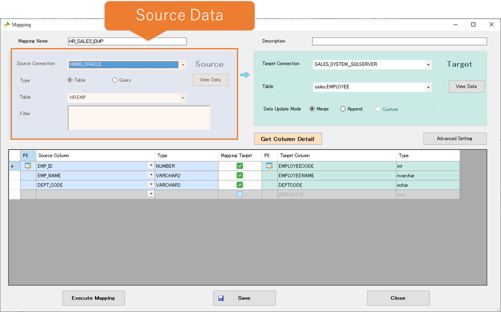
For RDB
Tables

| No | Item | Description |
|---|---|---|
| 1 | Source Connection | Select the connection that was configured on the connection configuration form. |
| 2 | Type | If you select an RDB connection, you can choose the source type from table and query. |
| 3 | Table | If you select a table as the type, a list of RDB tables and views will be displayed, select the object in the list. |
| 4 | Extraction Method | Select how to retrieve data. Normal extraction: Retrieves data from the table. If no filter is specified, all records are retrieved; otherwise, only records matching the filter are retrieved. Incremental extraction: Retrieves only records added or updated since the previous extraction. An update timestamp column or Oracle SCN can be used. See the details below. |
| 5 | View Data | Open a form that allows you to view existing data. |
| 6 | Refresh | Retrieve the latest table list. |
| 7 | Filter | Enter the search condition for data extraction without the WHERE keyword.Examples: Id = 1, Status = 'Active'. |
Incremental Extraction
Retrieves only data updated since the previous extraction.
Supported sources are Oracle, SQL Server, MySQL, PostgreSQL, BigQuery, Snowflake, and Salesforce.

| No | Item | Description |
|---|---|---|
| A1 | Update Timestamp Column | Specify the reference column used to identify incremental changes. In addition to an update timestamp column, Oracle SCN (such as ORA_ROWSCN) can be used. Data updated since the previous extraction is retrieved using the specified reference value. |
| A2 | TimeZone | Specify the time zone applied to the update timestamp column. |
| A3 | Last Update Timestamp | Displays the last reference value (timestamp or SCN) used by the previous extraction. It is initially unset and is set automatically after execution. |
| A4 | Overlap Time | Retrieve an overlapping time range before the last reference timestamp to prevent missed records caused by commit timing. This setting is not required when using Oracle SCN. |
| A5 | Incremental Position Settings | Manually set the last reference timestamp or SCN to retrieve data again or resume extraction from a specific point. |
| A6 | Filter Settings | Open the form for configuring incremental extraction filters. |
Incremental Extraction Watermark Settings
Use this form to view and change the watermark used for incremental extraction.
Clear the watermark or set it to a specific date and time to adjust the starting point. When Oracle SCN is used, the specified date and time are converted automatically to an SCN.
If no UTC indication is displayed, the time is interpreted as the connected database's local time.

| No | Item | Description |
|---|---|---|
| B1 | Current Watermark | Displays the saved incremental extraction watermark: a timestamp for timestamp-based extraction or an SCN value for Oracle SCN-based extraction. |
| B2 | Clear Watermark | Clear the existing watermark. The next database execution is treated as an initial run, subject to the configured extraction filter. For Web APIs, see incremental API retrieval below. |
| B3 | Set to Specified Time | Set the watermark to a specified date and time (or its Oracle SCN equivalent) to resume incremental extraction from that point. |
| B5 | New Start Date | Specify the extraction start date. When Oracle SCN is used, the date and time are converted internally to an SCN. |
| B6 | New Start Time | Specify the extraction start time. Together with the date, it defines the starting reference value. |
| B7 | Time Zone | Displays the time zone of the specified date and time. A UTC indication means UTC; otherwise, the connected database's local time is used. |
| B8 | Apply | Update the watermark with the specified value. For Oracle SCN, convert the date and time to an SCN and save it as the starting point. |
| B9 | Cancel | Discard the changes and close the form without updating the watermark. |
Query

| No | Item | Description |
|---|---|---|
| 8 | Query | Select Query to use SQL for retrieving source data. |
| 9 | Query Content | Enter the SQL for data extraction. Example: SELECT EMPID , EMPNAME , DEPT_CODE FROM HR.EMP WHERE DEPT_CODE = '0003' |
Bind Variable Settings
Simple Data Integrator can use the SELECT results of one mapping as input (bind variables) for another mapping, enabling dynamic data integration between mappings.
Overview
Assign the SELECT results of an upstream input mapping to the bind variables of a downstream mapping. The downstream mapping then processes data using those values. Multiple parameters and multiple input rows are supported.
Configuration Steps
1. Enter bind variables in the extraction filter or query.
| No | Item | Description |
|---|---|---|
| 7 | Filter | Use bind variables in the extraction condition. Do not enter the WHERE keyword in the filter field.Example: UPDATE_TIME >= :latest_date. |
| 9 | Query Content | Use the appropriate bind variable syntax in the SQL. Example: SELECT EMPID, EMPNAME, DEPT_CODE FROM HR.EMP WHERE DEPT_CODE = :DEPT_CODE |
The bind variable syntax depends on the database:
| Database | Bind Variable Syntax | Example |
|---|---|---|
| Oracle | :param |
SELECT * FROM users WHERE id = :id AND status = :status |
| SQL Server | @param |
SELECT * FROM users WHERE id = @id AND status = @status |
| PostgreSQL | @param |
SELECT * FROM users WHERE id = @id AND status = @status |
| MySQL | @param |
SELECT * FROM users WHERE id = @id AND status = @status |
| DB2 | @param |
SELECT * FROM users WHERE id = @id AND status = @status |
| ODBC | ? |
SELECT * FROM users WHERE id = ? AND status = ? |
2. Configure the bind variable details.

Click the Bind Variable Settings button to open the detailed settings form.

| No | Item | Description |
|---|---|---|
| P1 | Bind Variable Values | Select how to assign bind values. Use input mapping output (pass bind values): Bind each parameter to a value from the input mapping's results. These values are passed dynamically as SQL conditions or arguments. Do not use input mapping (execute fixed SQL): Execute using fixed values or database-specific variables defined in the SQL, without an input mapping. |
| P2 | Input Mapping | Select the mapping that provides the bind variable values. |
| P3 | Processing Unit | Process all rows together: Loop through the input mapping's rows, retrieve data for each row, and accumulate the results locally. After all data has been retrieved, perform downstream operations such as target database updates or file output once for the combined results. Process one row at a time (repeat): Retrieve data for each input row and perform downstream operations for that row immediately. |
| P4 | Input Column | Select the column containing the value to bind to the parameter. |
| P5 | Bind | Select whether to bind the parameter to the input column's value. When checked, the value is used as a condition or argument during extraction. When unchecked, the parameter is executed as a database-specific variable. This option is selectable only for SQL Server. |
| P6 | Parameter Type | Set the bind variable's data type. |
| P7 | Group Filter | Optionally filter the mapping list by group. |
For CSV

| No | Item | Description |
|---|---|---|
| 11 | CSV Filename | Enter the name of the CSV file to be imported. If you want to configure a file pattern, press the "File Detail" button and set the detailed settings. |
| 12 | File Detail | If you want to include multiple CSV files as import targets, press the "File Detail" button and configure the settings on the detailed settings screen. For more details on how to configure the settings, refer to the following: File Details Settings |
| 13 | Encoding | Specify the CSV file encoding. Examples: UTF-8, Shift_JIS. |
| 14 | Start Row | Specify the row at which reading starts (the first row is 1). With a header row: The specified start row is treated as the header, and its values become the column names. Earlier rows are skipped. Without a header row: Earlier rows are skipped, and the specified start row is read as data. |
| 15 | Use Header Columns | Select whether the CSV file has a header row. |
| 16 | Columns | Displays the columns of the template CSV file. |
| 17 | Retrieve Columns from File | Select a template CSV file, analyze its column information, and display it in the list. |
| ※ | Delimiters, enclosing characters, etc. are automatically determined, so there is no need to specify them. |
For Excel

| No | Item | Description |
|---|---|---|
| 21 | Excel Filename | Enter the name of the Excel file to be imported. If you want to configure a file pattern, press the "File Detail" button and set the detailed settings. |
| 22 | File Detail | If you want to include multiple Excel files as import targets, press the "File Detail" button and configure the settings on the detailed settings screen. For more details on how to configure the settings, refer to the following: File Details Settings |
| 23 | Sheet | Select the sheet number to be imported. * The first sheet is 1. |
| 24 | Encoding | Specify the Excel file encoding. Examples: UTF-8, Shift_JIS. |
| 25 | Start Row | Specify the row at which reading starts (the first row is 1). With a header row: The specified start row is treated as the header, and its values become the column names. Earlier rows are skipped. Without a header row: Earlier rows are skipped, and the specified start row is read as data. |
| 26 | Use Header Columns | Select whether the Excel file has a header row. |
| 27 | Retrieve Columns from File | Select a template Excel file, analyze its column information, and display it in the list. |
| 28 | Columns | Displays the columns of the template Excel file. |
For JSON
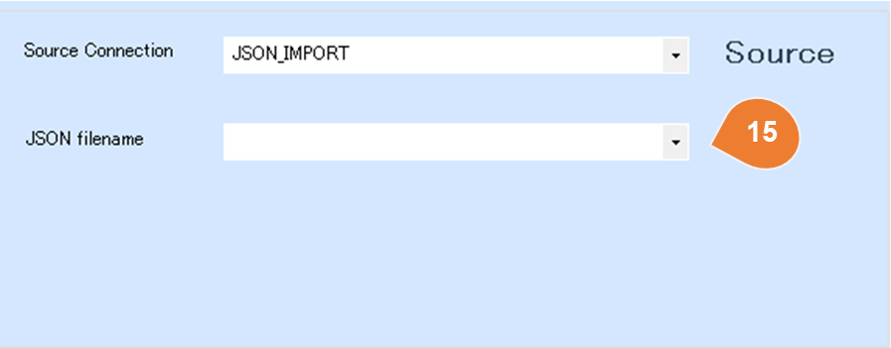
| No | Item | Description |
|---|---|---|
| 31 | JSON Filename | Enter the name of the JSON file to be imported. If you want to configure a file pattern, press the "File Detail" button and set the detailed settings. |
| 32 | File Detail | If you want to include multiple JSON files as import targets, press the "File Detail" button and configure the settings on the detailed settings screen. For more details on how to configure the settings, refer to the following: File Details Settings |
| 33 | Retrieve Structure from File | Select a template JSON file, analyze its structure, and display it in a tree view format. |
| 34 | Target Object | If the data is structured as an array, each element within the array (detail row) can be imported as a single record. Please select the array object to be imported. |
| 35 | Show Parent objects | By default, the child-layer objects of the selected object are displayed. If you also need parent-layer objects, check this option. |
The list of objects displayed as a sample is based on the following JSON example.
{
"orderno": 1,
"customercode": "A001",
"customeraddress":
{
"streetaddress":"Nagashima 1-1-1",
"city":"Aomori City",
"state": "Aomori Prefecture",
"postalcode":"030-8570"
},
"detail": [
{
"prodcode": 1,
"ordernumber": 3,
"price": 2000,
"amount": "6000"
},
{
"prodcode": 2,
"ordernumber": 2,
"price": 1700,
"amount": 3400
}
]
}
For XML
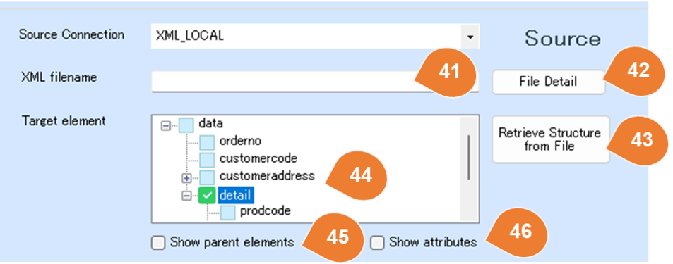
| No | Item | Description |
|---|---|---|
| 41 | XML Filename | Enter the name of the XML file to be imported. If you want to configure a file pattern, press the "File Detail" button and set the detailed settings. |
| 42 | File Detail | If you want to include multiple XML files as import targets, press the "File Detail" button and configure the settings on the detailed settings screen. For more details on how to configure the settings, refer to the following: File Details Settings |
| 43 | Retrieve Structure from File | Select a template XML file, analyze its structure, and display it in a tree view format. |
| 44 | Target Element | If the data is structured as an array, each element within the array (detail row) can be imported as a single record. Please select the array element to be imported. |
| 45 | Show Parent Elements | By default, the child-level elements of the selected element are displayed. If you also need parent-level elements, check this option. |
| 46 | Show Attributes | By default, XML attributes are not listed. If attribute data is also required, check this option. |
The list of elements displayed as a sample is based on the following XML example.
<data>
<orderno>1</orderno>
<customercode>A001</customercode>
<customeraddress>
<streetaddress>Nagashima 1-1-1</streetaddress>
<city>Aomori City</city>
<state>Aomori Prefecture</state>
<postalcode>030-8570</postalcode>
</customeraddress>
<detail>
<prodcode>1</prodcode>
<ordernumber>3</ordernumber>
<price>2000</price>
<amount>6000</amount>
</detail>
<detail>
<prodcode>2</prodcode>
<ordernumber>2</ordernumber>
<price>1700</price>
<amount>3400</amount>
</detail>
</data>
Source File Detail Configuration
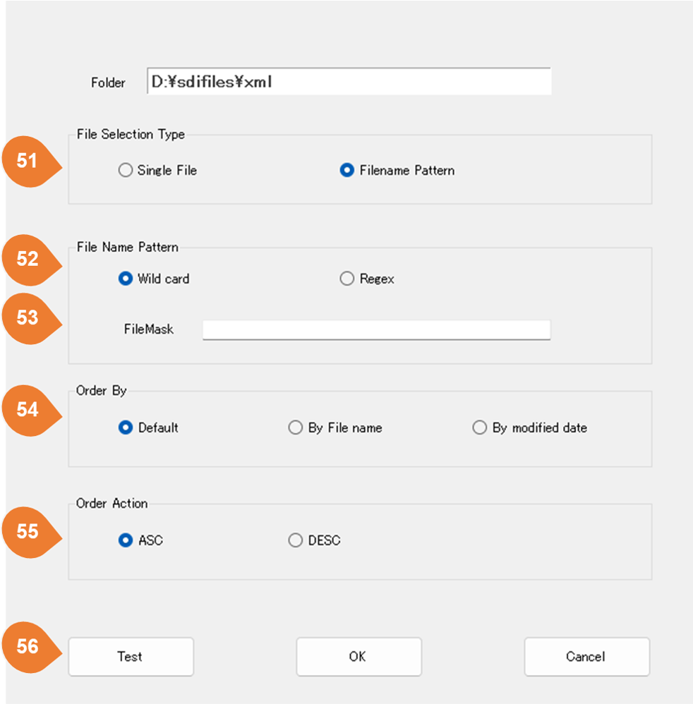
| No | Item | Description |
|---|---|---|
| 51 | File Selection Type | The data import target can be set as a single file or a list of files that match a filename pattern. |
| 52 | File Name Pattern | If you select a filename pattern as the data import target, you can configure the pattern using wildcards and regular expressions. |
| 53 | FileMask | Please enter a file mask using wildcards or regular expressions. |
| 54 | Order By | If multiple files are selected, set the order of file import. |
| 55 | Order Action | Please set the sorting order action. |
| 56 | Test | The current list of target files is displayed based on the configured file mask. |
Web Service/ Web API

| No | Item | Description |
|---|---|---|
| 61 | Endpoint | Please enter a relative URL. Dynamic parameters related to time can be configured. For details on the configuration method, refer to the following: About Dynamic Parameter Configuration |
| 62 | Request Detail | Configure detailed information such as the request method, headers, and POST body. |
| 63 | Refresh | Retrieve the latest information from the endpoint. |
| 64 | Set Watermark | Open the watermark settings form to set the starting date and time for incremental retrieval. Appears when a supported watermark variable is used. |
Incremental retrieval for Web APIs
Use expressions containing LastWatermarkLocalTime or LastWatermarkUTCTime in the endpoint or a fixed POST text body to retrieve data from the saved position. Enclose each expression in {} and preserve the variable name's case.
| Variable | Value |
|---|---|
LastWatermarkUTCTime |
The previously saved retrieval boundary in UTC. |
LastWatermarkLocalTime |
The same instant converted to the executing server's local time zone. Studio, Worker, and CLI use the time zone of their own execution server. |
URL examples:
/api/v1/orders?updatedFrom={LastWatermarkUTCTime.ToString("yyyy-MM-ddTHH:mm:ssZ")}
/api/v1/orders?updatedDate={LastWatermarkLocalTime.ToString("yyyyMMdd")}
/api/v1/orders?updatedFrom={LastWatermarkUTCTime.AddDays(-1).ToString("yyyy-MM-dd")}
Fixed POST text body (JSON):
{
"updatedFrom": "{LastWatermarkUTCTime.AddMinutes(-5).ToString(\"yyyy-MM-ddTHH:mm:ssZ\")}",
"status": "active"
}
Keep ordinary quotes in the URL expression; escape quotes as \" inside a JSON string. Use the format ending in Z with the UTC variable. A date-only format omits the time; the API's comparison rules also determine the retrieval range.
This feature is enabled by the source endpoint or a fixed POST text body. It does not enable incremental retrieval through headers, SQL-generated bodies, or OData. The API must support filtering by a date/time boundary.
Set the incremental position
The source form displays the incremental position button when a supported variable is used. The position cannot be edited while the mapping is running.

| No | Item | Description |
|---|---|---|
| 1 | Current watermark | Displays the saved UTC boundary, or indicates that it is not set for the first run. |
| 2 | Clear watermark | Remove the saved value. The next execution uses 2000/01/01 00:00:00 UTC. |
| 3 | Set to a specified time | Save the specified UTC date and time. |
| 4 | New start date | Enter the starting date. |
| 5 | New start time | Enter the starting time. |
| 6 | UTC | The display and input time zone. Enter UTC even when using the Local variable. |
| 7 | Apply | Confirm and apply the clear or set operation. |
| 8 | Cancel | Close without changing the position. |
Save timing and replay
An unset or cleared API watermark uses the default boundary. Unlike the DB watermark clear operation, this does not necessarily retrieve all records. The configured date filter and the API determine the actual range.
Within one execution, the previous watermark is fixed across all pages. The new candidate boundary is the UTC time immediately before the first API request. It is saved after all pages and downstream processing succeed; failure, warning, or cancellation does not advance it. When the API mapping supplies another mapping's input, its watermark is saved after downstream success. Preview and access tests do not advance the execution watermark.
To overlap retrieval for late-arriving records, move the filter boundary back, for example with .AddMinutes(-5). Configure target keys and update behavior to handle repeated records.
Changing API retrieval conditions
If the base URL, endpoint, method, POST body, headers, or other recorded retrieval conditions differ from the saved conditions, execution stops for confirmation of the position.
- Review the changed API conditions and decide which UTC boundary to use.
- Save the mapping and open the incremental position dialog.
- To continue from the same position, reapply the displayed UTC date and time. To retrieve a different period, set the required UTC boundary.
- Clear the position to restart from the default boundary.
- Execute again and verify the retrieved range and results.
Web Service / Web API Request Detailed configuration
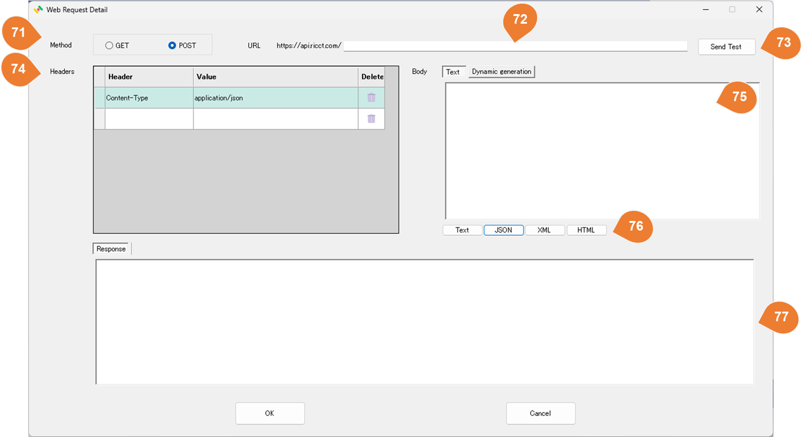
| No | Item | Description |
|---|---|---|
| 71 | Method | Select the request method. GET and POST are supported. |
| 72 | Endpoint | Please enter a relative URL. Dynamic parameters related to time can be configured. For details on the configuration method, refer to the following: About Dynamic Parameter Configuration |
| 73 | test | Execute an access test for the Web Service / Web API. |
| 74 | Headers | Configure the request headers. |
| 75 | Body | If using POST, configure the request body here. |
| 76 | Content-Type Setting Button | A button that automatically sets the Content-Type header to text, JSON, XML, or HTML. |
| 77 | Response | When you run the test, information about the response will be displayed. |
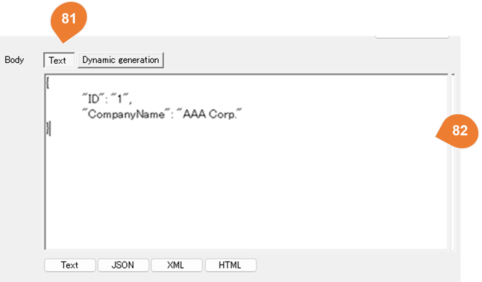
| No | Item | Description |
|---|---|---|
| 81 | Text | Select "Text" if the body type is RAW text. |
| 82 | Body Text | Please enter the body text. Dynamic parameters related to time can be configured. For details on the configuration method, refer to the following: About Dynamic Parameter Configuration |
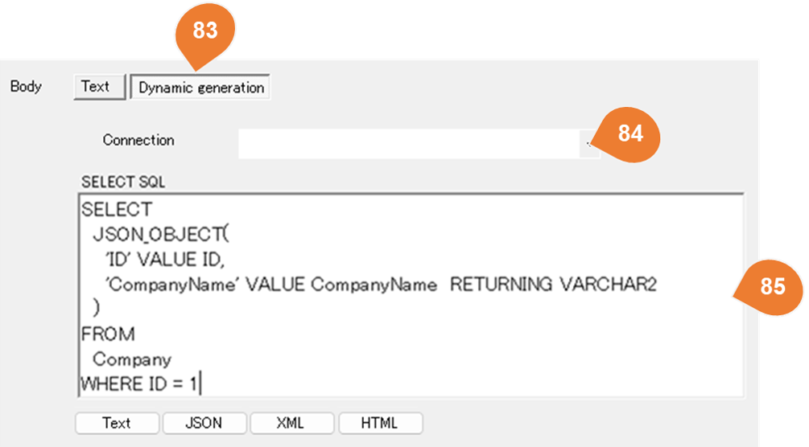
| No | Item | Description |
|---|---|---|
| 83 | Dynamic Generation | Select "Dynamic Generation" if the body content is dynamically generated. In dynamic generation, the execution result of the SQL set in SELECT SQL is used as the body for the POST request. |
| 84 | Connection | Select the target database. |
| 85 | SELECT SQL | Enter the SQL query to be executed. |
About Dynamic Parameter Configuration
The configuration method evaluates expressions enclosed in {} and uses the computed values.
| Example | Configuration Method |
|---|---|
| Example of using the current date | /api/v1/orders/{yyyyMMdd} /api/v1/orders/{yyyyMMdd} |
|
{ "orderno": 1, "customercode": "A001", "updatedate": "{yyyy/MM/dd HH:mm:ss}", } |
|
| Example of Using Yesterday's Date. | /api/v1/orders/{DateTime.Now.AddDays(-1).ToString("yyyyMMdd")} |
|
{ "orderno": 1, "customercode": "A001", "updatedate": "{DateTime.Now.AddDays(-1).ToString(\"yyyyMMdd\")}" } |
Web Service / Web API Paging Settings
Configure paging to retrieve data that an API returns across multiple pages. Select the paging method required by the API: page number, offset/count, Link, or cursor. Paging allows large datasets to be retrieved efficiently. Select None for APIs that do not use paging.
Paging and destination validation
For page-number and offset paging, JSON record counts use the record element selected in the mapping, including nested arrays such as data.items. An empty array contains zero records; a missing selected element or an invalid format is an error. Such an error does not advance an API watermark.
Next-page URLs and redirects for Web APIs and OData must use the same scheme, host, and port as the initial request. Execution stops if the API returns a different destination; review the API's URL configuration in that case.
Paging: None
Retrieve only the data available from the specified URL, without paging.
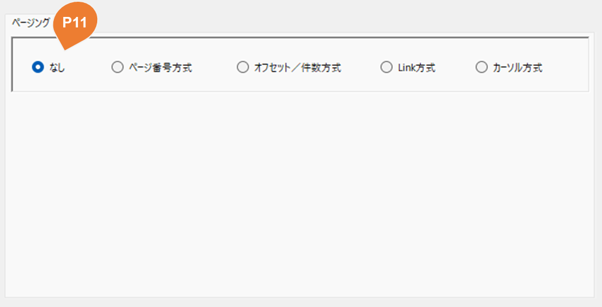
| No | Item | Description |
|---|---|---|
| P11 | Paging Method | Select None to disable paging. |
Paging: Page Number
Retrieve data by specifying a page number, then change the page number to retrieve subsequent pages.
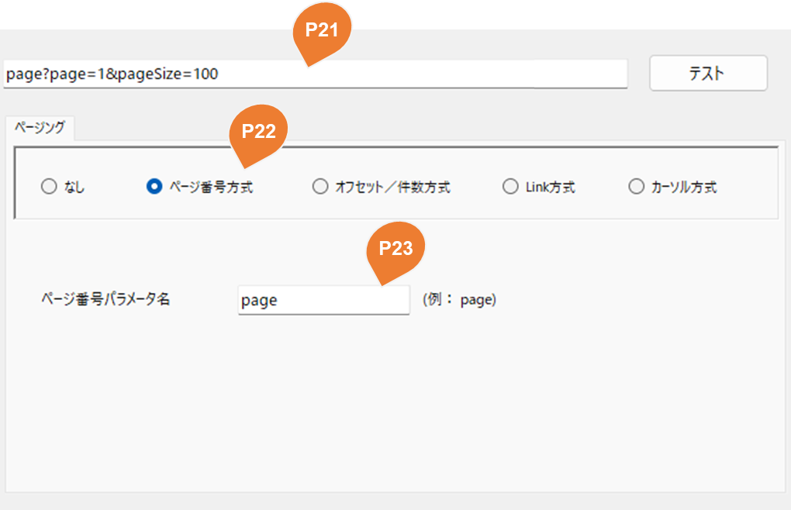
| No | Item | Description |
|---|---|---|
| P21 | URL | Enter the starting page URL with a page number. If omitted, extraction starts at page 1. Specify the record count (such as pageSize) according to the API specifications if needed. |
| P22 | Paging Method | Select Page Number. |
| P23 | Page Number Parameter Name | Specify the parameter name used for the page number, such as page. |
Paging: Offset / Count
Specify the starting position (offset) and record count in the URL parameters, then change the offset to retrieve subsequent data.
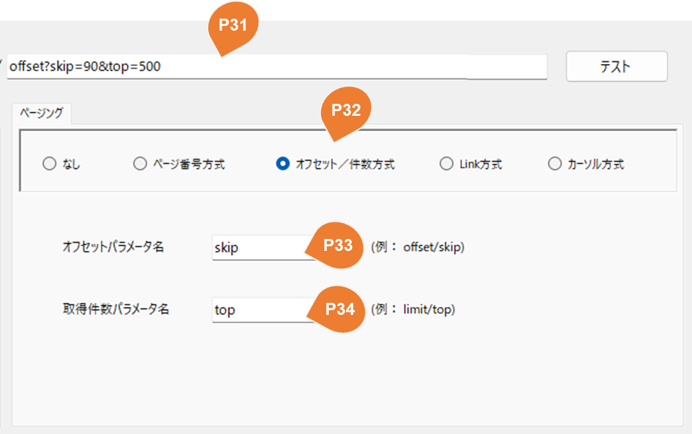
| No | Item | Description |
|---|---|---|
| P31 | URL | Enter a URL containing the starting offset and record count. If the offset is omitted, extraction starts at the beginning. Specify the record count according to the API specifications if needed. |
| P32 | Paging Method | Select Offset / Count. |
| P33 | Offset Parameter Name | Specify the starting position parameter name, such as offset or skip. |
| P34 | Record Count Parameter Name | Specify the record count parameter name, such as limit or top. |
Paging: Link
Use the next-page URL returned in the response body or HTTP Link header to retrieve subsequent pages.
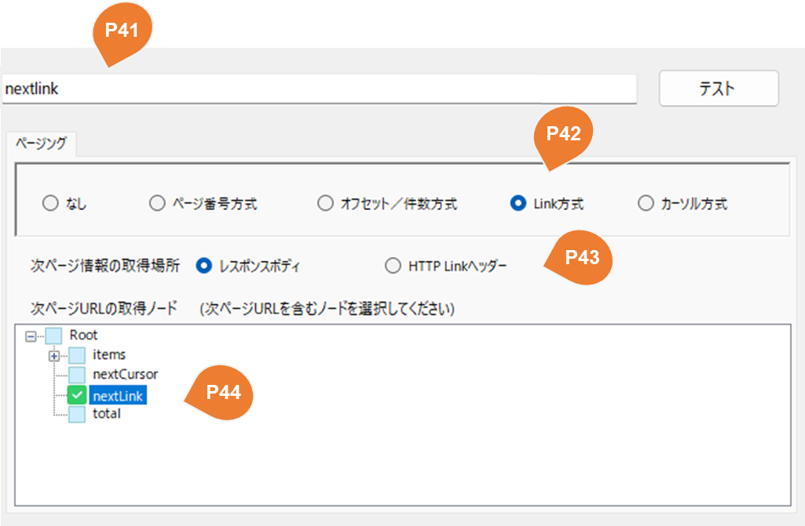
| No | Item | Description |
|---|---|---|
| P41 | URL | Enter the initial URL. Subsequent requests use the next-page URL returned in the response body or HTTP header. |
| P42 | Paging Method | Select Link. |
| P43 | Next-Page Information Location | Select where to obtain the next-page URL: Response Body or HTTP Link Header. |
| P44 | Next-Page URL Node | Select the response body node containing the next-page URL. Its value is used to request the next page. |
Paging: Cursor
Use the cursor token returned in each response to retrieve subsequent pages.
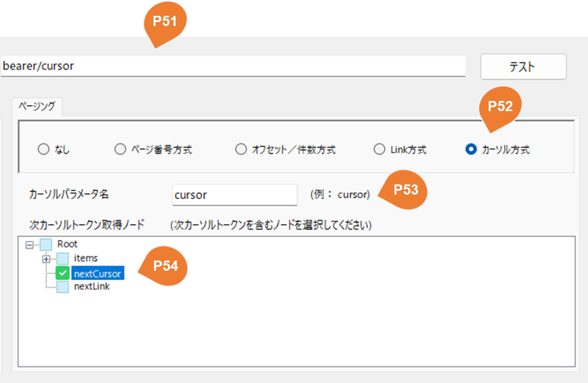
| No | Item | Description |
|---|---|---|
| P51 | URL | Enter the initial URL. Subsequent requests use the cursor token returned in the response. |
| P52 | Paging Method | Select Cursor. |
| P53 | Cursor Parameter Name | Specify the cursor parameter name, such as cursor. |
| P54 | Next Cursor Token Node | Select the response body node containing the token for the next page. Its value is used to request the next page. |
Salesforce
Objects
Objects are a concept similar to database tables.
The configuration method is the same as the table settings, so please refer to the following documentation:
Tables
SOQL
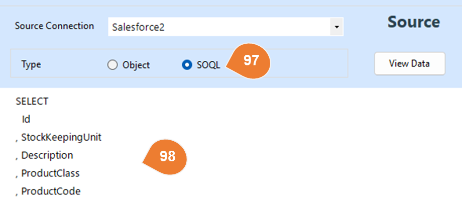
| No | Item | Description |
|---|---|---|
| 97 | SOQL | Select SOQL if you wish to use SOQL as the method for acquiring source data. |
| 98 | SOQL Content | Enter the SOQL query for data extraction. Example: SELECT Id , Description , Name from Product2 |
OData
Entity Sets
Entity Sets are a concept similar to database tables.
The configuration method is the same as the table settings, so please refer to the following documentation:
Tables
Regarding OData Conditions
In OData, you can control the data to be retrieved by specifying query options.
-
$filter Filters the data based on specified conditions (equivalent to the SQL WHERE clause).
-
$orderby Specifies the sort order of the data.
-
$top / $skip Specifies the number of records to retrieve or the starting position (paging).
For details on available query options and syntax, please refer to the OData Official Manual.